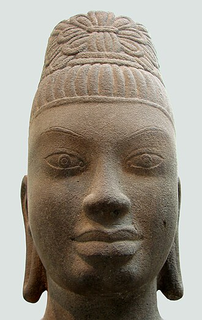
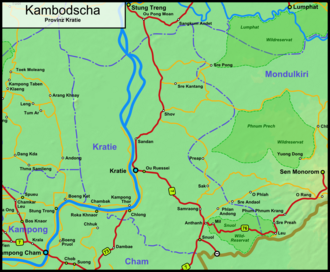

ក្រចេះគឺជាខេត្តមួយក្នុងប្រទេសកម្ពុជា។ ក្រុងរបស់ខេត្តមានឈ្មោះថាក្រចេះដែលជាទីរួមខេត្ត។ ក្រចេះគឺជាខេត្តតូចមួយតែគួរឲ្យចាប់ចិត្តសិ្ថតនៅប៉ែកឦសាននៃរាជធានីភំ្នពេញ។ វាមានព្រំប្រទល់ជាប់នឹងស្ទឹងត្រែងនៅភាគខាងជើង មណ្ឌលគីរីនៅខាងកើត កំពង់ធំ និង កំពង់ចាមនៅខាងលិច ហើយត្បូងឃ្មុំ និងវៀតណាមនៅខាងត្បូង។ មានផ្លូវគមនាគមន៍តភ្ជាប់ ៣ខែ្ស គឺផ្លូវជាតិលេខ៧ ចម្ងាយ ៣៤0 គីឡូម៉ែត្រ ផ្លូវលំក្រាលក្រួសក្រហម កាត់ស្រុកតំបែរ-ស្រុកឆ្លូង មួយខែ្សនិងតាមមាត់ទនេ្លមួយខែ្សទៀត មានចម្ងាយប្រហាក់ប្រហែល នឹងផ្លូវទឹកទនេ្លមេគង្គ ២២០ គីឡូម៉ែត្រ។ ការធ្វើដំណើរ ទោះបីតាមរថយន្តកី្តតាមកាណូតលឿនកី្តមិនលើសពី៥ម៉ោងទេ ពិតជាបានមកដល់ក្រុងក្រចេះដោយសុវតិ្ថភាព។ ខេត្តក្រចេះ សម្បូរដោយធនធានធម្មជាតិ នៅលើដី មានព្រៃព្រឹក្សា វាលស្រែ ដីមានជីជាតិ នៅក្នុងទឹកសម្បូរដោយត្រី ពិសេសមេពូជត្រីធំៗ នៅតាមអន្លង់មេគង្គក្នុងស្រុកសំបូរ និងមានសត្វផ្សោតទឹកសាប ដែលទាក់ទាញភ្ញៀវ ទេសចរជាតិ និងអន្តរជាតិ។ ក្រៅពីនេះ នៅមានទេសភាពដ៏ស្រស់សោភ័ណ ថៃ្ងលិចគងព្រៃកោះទ្រង់ដ៏ស្អាត គួរឱ្យចង់ទស្សនាទៀតផង។ ទាំងអស់ដែលបានបរិយាយចោះៗ ខាងលើ ធ្វើឲ្យខេត្តក្រចេះមានកំណើនភ្ញៀវទេសចរណ៍ទេ្វដងក្នុង មួយឆ្នាំៗ។ កត្តាទាំងនេះបាន ចង្អុលឲ្យខេត្តក្រចេះជ្រើសរើសយក វិស័យទេសចរណ៍ជាវិស័យអាទិភាពក្នុងកិច្ចការស្តារ និងអភិវឌ្ឍសេដ្ឋកិច្ច ទោះតាមរយៈចំណូលដោយផ្ទាល់កី្ត ដោយប្រយោលកី្ត ក៏វិស័យទេសចរណ៍បានកំពុងជំរុញយ៉ាងស្វាហាប់ ដើម្បីធ្វើជាឧបករណ៍វិជ្ជមានមួយក្នុងការកាត់បន្ថយភាពក្រីក្រ បង្កើនការងារសម្រាប់ប្រជាពលរដ្ឋជាង ២៨ម៉ឺននាក់ នៅខេត្តក្រចេះ។
ប្រវត្តិសាស្ត្រ
 តាមចាស់ព្រឹទ្ធាចារ្យក្នុងតំបន់នេះបានអោយដឹងថា ក្រចេះ គឺជាពាក្សក្លាយពីភាសាបារាំងថា GATILLE ដោយអ្នកបកប្រែ អោយអាជ្ញាធរបារាំងពេលនោះ និយាយពុំត្រឹមត្រូវតាមភាសាបារាំង។ ពាក្យ GATILLE ក្លាយមកជា ក្រចេះ។ ដោយមានការបះបោរពីជនជាតិដើមភាគតិច "ព្នង" ប្រឆាំងនឹងការត្រួតត្រារបស់បារាំង អាណា ព្យាបាលបារាំងពេលនោះបានបញ្ជូនទ័ព និងចាត់លោក GATILLE ឲ្យផ្គត់ផ្គង់សម្ភារៈសឹក ភស្តុភារ និងបោះទីតាំងក្នុងទីក្រុង ក្រចេះសព្វថៃ្ងដោយ តាំងនាមមូលដ្ឋាននោះថា CAMP LOGISTIQUE DE GATILLE មានន័យថា ជំរុំភស្តុភារ Gatille។ ដូចនេះអ្នកខ្លះយល់ថា ក្រចេះ គឺជាពាក្យក្លាយមក ពីឈ្មោះនាយទាហានបារាំងរូបនេះ។
តាមវចនានុក្រមខែ្មរ របស់សមេ្តចសង្ឃរាជ ជួន-ណាត ភាគទី១ និង ភាគទី២ ត្រង់ទំព័រ៩៣០ បោះពុម្ពឆ្នា១៩៦៧ សរសេរថា "ក្រចេ" (ន) (ពាក្យជនជាតិស្ទៀង) ក្របី កំពង់ក្រចេ កំពង់ចម្លងក្របី (ក្លាយមកជា ក្រចេះ)។ តាមការរៀបរាប់របស់ចាស់ទុំរស់នៅក្នុងតំបន់នេះ បានឲ្យដឹងថានៅសម័យដើមខេត្តក្រចេះ មានជនជាតិដើមភាគតិច ជាច្រើនរស់នៅ ហើយមានទំនាក់ទំនងពាណិជ្ជកម្មផេ្សងៗ នៅភូមិភាគឦសាន្តទាំងមូលតាមច្រក "កំពង់ចម្លងក្របី" របស់ ជនជាតិស្ទៀងឆ្លងពីក្រចេះទៅតំបន់ ខាងលើ និងក្រចេះមកតំបន់ខាងក្រោម ហើយតែងតែមកផ្លាស់ប្តូរទំនិញទៅវិញទៅមកនៅ កំពង់ចម្លងនេះ។ ផែ្អកតាមឯកសារយោង របស់លោក ជួប-ឃាន កំណើត និងប្រវតិ្តនាមខេត្តក្រចេះ ចុះថៃ្ងទី ១៨ មេសា ២០០១ បព្ជាក់ថាសម័យកាល ក្រុងសម្ភុបុរៈ (សំបូរ) សេ្តចលាវតែងតែនាំសួយសារ ផេ្សងៗ មកថ្វាយសេ្តចខែ្មរ តាមរយៈកំពង់ចម្លងនេះដែរ។
ទីតាំងភូមិសាស្រ្ត
 ខេត្តក្រចេះស្ថិតនៅតំបន់ខ្ពង់រាបប៉ែកឦសាននៃ ប្រទេសកម្ពុជា សំបូរទៅដោយសម្បត្តិវប្បធម៌ប្រវត្តិសាស្រ្ត និងធម្មជាតិជាច្រើន ដែលទាក់ទាញចំណាប់អារម្មណ៍ ភ្ញៀវជាតិ និងអន្តរជាតិអោយមក ទស្សនាកំសាន្ត និងសិក្សាស្រាវជ្រាវ ដើម្បីបាន ឃើញបានយល់ និងបានស្គាល់ពីទិដ្ឋភាពពិតនៃ សម្បតិ្តទាំងនោះដោយខានពុំបាន។ ក្រៅអំពី លទ្ធភាពខាងផែ្នកទេសចរណ៍ខេត្តក្រចេះអាចផ្តល់ លទ្ធភាពលើវិស័យផេ្សងៗទៀតជាច្រើន ដូចជាវិស័យសេដ្ឋកិច្ច សង្គមកិច្ច វប្បធម៌ និងអរិយធម៌ ដែលជាកេរ្តិ៍ដំណែលពីដូនតារបស់ខែ្មរបានបន្សល់ទុកអោយយ៉ាងច្រើនសន្ធឹកសន្ធាប់ដល់កូនចៅជំនាន់ក្រោយផងដែរ។ ក្រចេះក្រុងជាទីប្រជុំជនតូចប៉ុនែ្តស្អាតលំអទៅដោយអាគារស្ថាបនាតាំងពីទសវត្ស ១៩៤០-១៩៥០ និង១៩៦០ ដែលមាន រចនាបថល្អប្រណិត។ នៅគ្រប់ទីកនែ្លងក្នុងខេត្តប្រកបដោយ ធម្មជាតិពិតដ៏សែនមនោរម្យ នៅខាងមុខមានដងទនេ្ល និងកោះនៅខាងក្រោយមានបឹងដ៏ធំ ដែលមានជំនោរបរិសុទ្ធ។ អ្នកដែលបានមកដល់ខេត្តក្រចេះ ជាលើកដំបូងប្រាកដជាមានអារម្មណ៏ សប្បាយរីករាយ នឹងបានគយគន់ទេសភាព ហើយនិងស្រូបខ្យល់រំភើយៗនាពេលរសៀលថៃ្ងរៀបលិច ដ៏ស្រស់ត្រកាល។ ខេត្តក្រចេះមានសត្វផ្សោតទឹកសាបដែលជាប្រភេទសត្វដ៏កម្រក្នុងពិភពលោកក៏ដូចជាក្នុងតំបន់ និងសំបូរទៅដោយរមណីយដ្ឋានបែបប្រវត្តិសាស្រ្តនិងធម្មជាតិដ៏ប្រពៃ ដែលមានការទាក់ទាញការចាប់អារម្មណ៏ពី គ្រប់មជ្ឈដ្ឋានទាំងក្នុងនិងក្រៅប្រទេស និងមាន សារៈសំខាន់សំរាប់អ្នកសិក្សាស្រាវជ្រាវសែ្វងយល់។ លើសពីនេះខេត្តក្រចេះមានជនជាតិដើម ភាគតិចរស់នៅចំនួន៧ ជនជាតិដូចជា ព្នង ស្ទៀង គួយ ខោញ មិល ក្រោល ថ្មូន។ ខេត្តមានរមណីយដ្ឋានចំនួន ១៣ កនែ្លង ក្នុងនោះមានរមណីយដ្ឋានវប្បធម៌ប្រវត្តិសាស្រ្តចំនួន ៦ កនែ្លង និងរមណីយដ្ឋានធម្មជាតិចំនួន ៧ កនែ្លង។ ការធ្វើដំណើរតាមផ្លូវជាតិលេខ៧ ដែលមានចម្ងាយ ៣៤០ គ.ម. មានភាពងាយស្រួលគ្រប់រដូវកាលដោយបច្ចុប្បន្នផ្លូវជាតិត្រូវបានក្រាលកៅស៊ូរួចរាល់ហើយអ្នកទេសចរណ៍អាចធ្វើដំណើរ មកកាន់ខេត្តក្រចេះតាមមធ្យោបាយផ្ទាល់ខ្លួន រថយន្តតាក់ស៊ី រថយន្តក្រុង អ្នកទេសចរណ៍ក៏អាចធ្វើដំណើរតាមទនេ្លមេគង្គដែលមានចម្ងាយ ២២០ គម. ដោយប្រើមធ្យោបាយនាវាលឿន អ្នកធ្វើដំណើរអាចគយគន់ទេសភាពតាមដងទនេ្ល។ ការធ្វើដំណើរតាមផ្លូវអាកាសពុំទាន់អាចប្រព្រឹត្ត ទៅបាននៅឡើយដោយសារ អាកាសយាន្តដ្ឋានពុំទាន់បានកែលំអនិងពុំទាន់មានជើងហោះហើរនៅឡើយ។ លើសពីនេះភ្ញៀវទេសចរណ៍អាចបន្តដំណើរទៅកាន់ខេត្តស្ទឹងត្រែង រតនគិរី មណ្ឌលគិរី និងទៅប្រទេសជិតខាងដូចជា ប្រទេសលាវ និង វៀតណាម។
| ក្រមស្រុក-ក្រុង | ស្រុក-ក្រុង | ឡាតាំង |
|---|---|---|
| ១០០១ | ឆ្លូង | Chhloung |
| ១០០២ | ក្រចេះ | Kratie |
| ១០០៣ | ព្រែកប្រសព្វ | Preaek Prasab |
| ១០០៤ | សំបូរ | Sambour |
| ១០០៥ | ស្នួល | Snuol |
| ១០០៦ | ចិត្របុរី | Chet Borei |